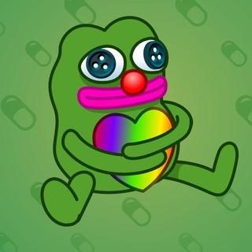

SOYTLIX
Привет! Я сойтликс. Пытался заниматься телеграм каналами, но сейчас бросил, так как всё прогорело. Сейчас занимаюсь другими нишами, такими как NFT Gifts, VPN сервера, видеомонтаж и др. Вне работы слежу за Blue Lock и периодически перепрохожу The Last of Us (проходил уже много раз, в подтверждение - Элли на аватарке :)). Не против новых знакомств или сотрудничества. Пишите, если есть дело или просто настроение. СММ не занимаюсь, с такими предложениями не ко мне. Ниже - мои навыки и услуги.
🌐 Разработка сайтов
Делаю сайты любого характера и сложности. От стильных лендингов и портфолио до многостраничных сервисов. Современный дизайн, адаптивная верстка под все устройства, продуманная структура и внимание к каждой детали. Реализую ваши идеи в вебе качественно и функционально.
Видеомонтаж
Создаю динамичный, цепляющий видеоконтент, который досматривают до конца. Владею продвинутым монтажом, цветокоррекцией, саунд-дизайном и motion-графикой. Превращаю сырой материал в сочную картинку, задаю правильный ритм и настроение. Понимаю алгоритмы удержания внимания, делаю круто как для YouTube, так и для Reels / TikTok.
🖥️ Настройка серверов (VPS)
Беру на себя всю техническую рутину и архитектуру. Полная настройка и администрирование Linux-серверов с нуля. Оптимизация производительности, настройка баз данных, обеспечение жесткой безопасности, защита от DDoS, поднятие личных VPN и автоматизация бэкапов. Ваш проект будет работать быстро и без сбоев.

Telegram NFTЗанимаюсь NFT в Telegram чисто для себя. Собираю интересные коллекции, покупаю и продаю на маркетах (MRKT, Portals). Провожу прямые сделки (OTC) и не прямые без скама и лишних проблем.
🔄 P2P / Крипта ПО ЗАПРОСУ
Занимаюсь покупкой и продажей криптовалюты (USDT/TON). Помогаю с обменом, вводом и выводом средств. Берусь за это не на постоянке, но по запросу или для своих — всегда готов помочь провести сделку быстро и по хорошему курсу.
Бескомпромиссное качество
Я не делаю работу шаблонно и не пропадаю с радаров. Если я берусь за проект, он будет выполнен на очень хорошем уровне. Ваш успех — это моя личная репутация.